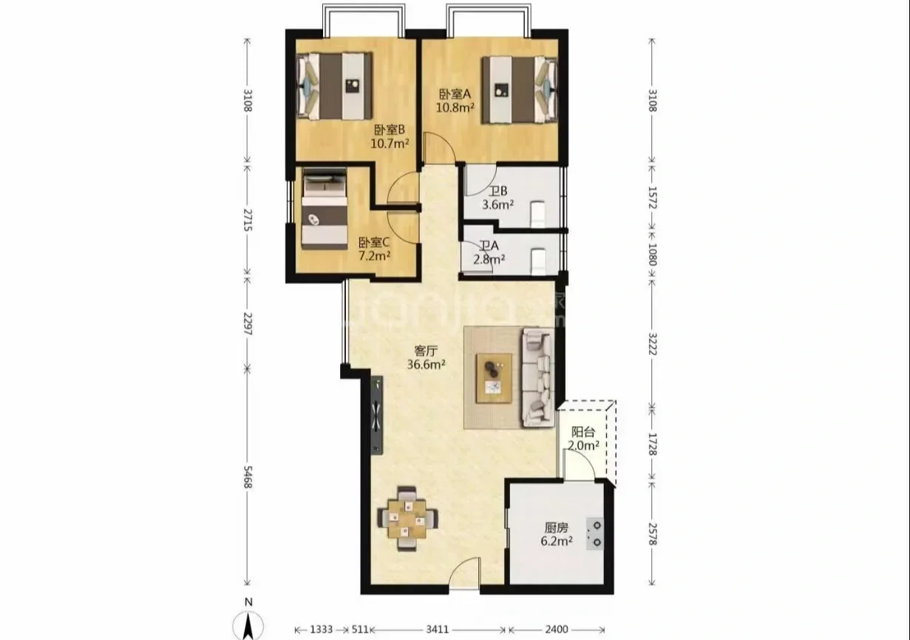
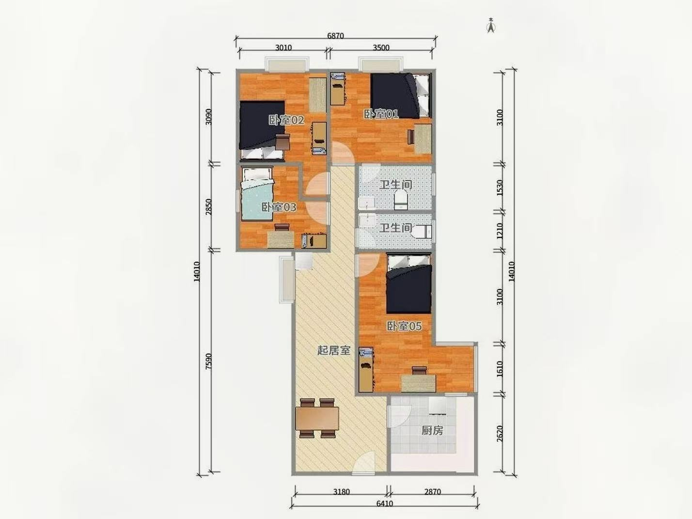

Sweet Home 3D JS / 1:1 坐标 / 完整设计
尺寸是底盘，
设计才是生活。
在比例底模上落实“现代自然”的完整方案：拆除第四房，恢复连续客餐厅；三卧、双卫、可闭合厨房和家政阳台均加入真实尺寸柜体、家具、设备与分层照明。
完整概念设计 V1
九个空间，一套克制的语言
暖白墙面、浅橡木、暖灰织物和少量鼠尾草绿；公共区3000K，厨房与卫浴任务光3500K。所有固定柜体都避开主要采光面。
拆掉自如第四房，
把光和公共生活还给客厅。
保留原厨卫湿区，厨房用黑框玻璃门实现“打开连通、关闭控烟”；临路北窗把隔声与新风作为装修底盘，而不是后期补救。
薄电视柜、低沙发、餐桌靠厨房，高柜集中实体墙。
主卧1500床；次卧可成长；小卧用独立日床而非固定榻榻米。
柜体、电器和照明回路同步设计，先锁设备尺寸再下柜体订单。
材料基调
暖白
浅橡木
暖灰织物
鼠尾草绿
哑黑金属
效果图用于表达材质、色温与家具语言；实际几何以本页2D/3D比例模型和交房复尺为准。
交互模型
同一份坐标，三种核对方式
3D 用于空间感；2D 用于比例；尺寸依据用于决定哪些数据能进施工图。
正在读取 .sh3d 模型…
3D 模型未能加载
可切换到 2D 比例核对继续查看。
拖动旋转 · 滚轮缩放 · 双击进入
V1 已加入141个设计构件与14组灯光。床品、沙发、柜门、厨卫设备和家政系统均由真实尺寸参数组合；门窗洞口与结构仍需复尺。
下载并在桌面版继续编辑 →展开查看两张原始户型图


可追溯尺寸
哪些数字可以信，哪些要拿尺子确认
“准确比例”不等于“竣工尺寸”。本模型对已标尺寸严格按 1:1 坐标录入，但墙体构造、门窗洞口、梁柱与管井仍缺现场数据。
| 项目 | 模型值 | 等级 | 依据 / 下一步 |
|---|
交房后第一轮复尺，优先拿这 8 项
- 每段承重墙、剪力墙和轻质隔墙的实际厚度
- 全部门洞净宽、墙垛宽度、门洞离墙距离与开启方向
- 窗洞宽高、窗台高、窗框进深，以及临路侧玻璃配置
- 梁底标高、原顶标高、地面高差和空调孔位
- 两卫排污管、地漏、沉箱边界、通风井及检修口
- 厨房烟道、燃气表、上下水、强弱电入户位置
- 阳台地漏、栏板/窗台高度、洗烘塔可用净宽
- 自如隔墙拆除后的原始墙面、找平层和水电遗留情况
本版边界
可以现在用，也知道何时不能用
现在可用
确认三房两卫关系、检验家具尺度、与设计师沟通动线、形成复尺清单。
复尺后更新
墙厚、洞口、梁柱、管井、窗台、层高录入后，可进入平面深化和水电定位。
不能直接施工
本版不是结构图、拆改图或水电施工图；涉及承重与燃气必须由有资质人员确认。